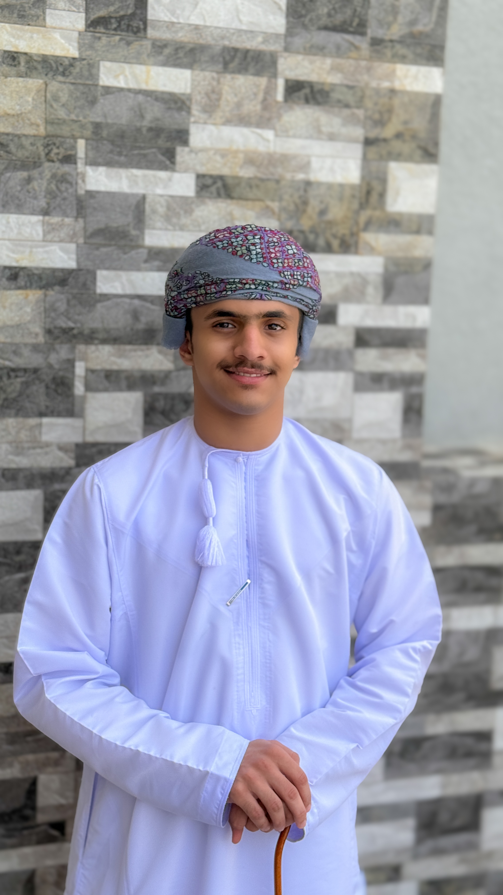

قبل أي شيء، هذه هي المصطلحات الأربعة التي ستسمعها في كل محادثة عن الذكاء الاصطناعي.
نماذج ذكاء اصطناعي درّبت على كميات هائلة من البيانات، تتنبأ بالكلمة التالية. هي محرّك الفهم والكتابة في كل أداة AI تستخدمها.
السؤال أو التعليمات التي تكتبها للنموذج. جودة الموجّه تحدد جودة الإجابة — السياق، الأمثلة، والقيود تصنع الفارق الكامل.
الوحدات الصغيرة التي يقرأها النموذج — قد تكون كلمة، جزء كلمة، أو علامة ترقيم. كل نموذج له حدّ أقصى للرموز، وكل رمز له تكلفة.
جسر يربط برامجك بنماذج AI مباشرة، بلا واجهة محادثة. من خلاله تبني تطبيقاتك وأدواتك الخاصة وتُدخل الذكاء في أي منتج.
قيّد الإجابة بالمصدر الذي تعطيه للنموذج. اطلب منه أن يقول "لا أعرف" بدل التخمين.
بدل أن يخمّن النموذج، نُغذيه بمصادر حقيقية ونجعله يبحث فيها قبل الإجابة.
يربط NotebookLM سؤالك بأجزاء محددة من المستندات التي رفعتها، ثم يصوغ الإجابة بالاستناد إلى تلك الفقرات بالاستشهاد المباشر — لا تخمين، لا اختراع.
لا يوجد نموذج "واحد" يتفوق في كل شيء. Claude مختصر ودقيق. GPT-5.1 مفصّل ومسهب. Gemini 3 منظّم. Grok جريء وغير تقليدي.
فكرة Model Council: ابعث سؤالك لعدة نماذج، اجعلها ترى ردود بعضها، ثم اطلب من نموذج "رئيس" أن يصوغ الإجابة النهائية بناء على الكل.
أداتي تزور منشور إنستغرام محدّد، تجمع التعليقات والتفاعل، ثم تستخدم Claude API لتحليل ردود الجمهور ومقارنتها بأداء المنشورات السابقة.
بعدها تنتقل إلى Gemini · Nano Banana API لتوليد رسوم بيانية مرئية تُلخّص الأداء، وأخيرًا يقوم ChatGPT API بصياغة تقرير شامل بالنتائج والتوصيات.
سحب وأفلت الـnodes لبناء وكيل ذكي · اضغط RUN لتنفيذ التدفق
تخيل أنك تصف ما تريد بلغتك الطبيعية، فيتحول إلى أداة تعمل. هذا هو vibe coding — ترميز قائم على النية، يكتب الكود نموذج AI، وأنت تركّز على التصميم والتجربة.
لست مضطرًا لأن تكون مبرمجًا متمرسًا لتبني أدواتك. دوّن فكرتك، أعط أمثلة، اطلب التحسينات، وستجد نفسك أمام منتج حقيقي.
Curate, organize, and copy your best prompts in one place.
المهارة الأهم: أن تعرف متى تطفئ الذكاء الاصطناعي. أحيانًا الإنسان أبلغ من الآلة، وأحيانًا الأداة البسيطة أصدق.
قائمة منتقاة لأدوات أستخدمها بشكل شبه يومي — مرتبة حسب الغرض.
للمحادثة العامة، التفكير، الكتابة، التعلّم — رفيقك اليومي.
لبناء وكلاء آليين، أتمتة المهام، وربط أدواتك ببعضها بسلاسة.
لتوليد صور بصرية مبهرة، فيديوهات قصيرة، وتعديل احترافي.
للأبحاث العميقة، تحليل الأسواق، صياغة الاستراتيجيات، ومراجعة الأدبيات.
شكرًا لكم — الأسئلة الآن مفتوحة.